МетеоРитм
Сервис для метеозависимых людей: заранее предупреждает об изменениях погоды, которые могут сказаться на самочувствии, и подсказывает, как подготовиться.
- Роль
- Product Owner и Lead Designer
- Контекст
- Акселератор «Гидромет-Геосфера», 2025
- Результат
- ТОП-8 из 50 стартапов акселератора

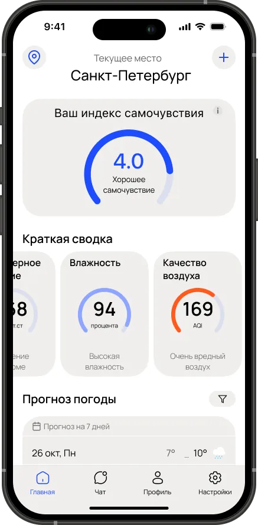
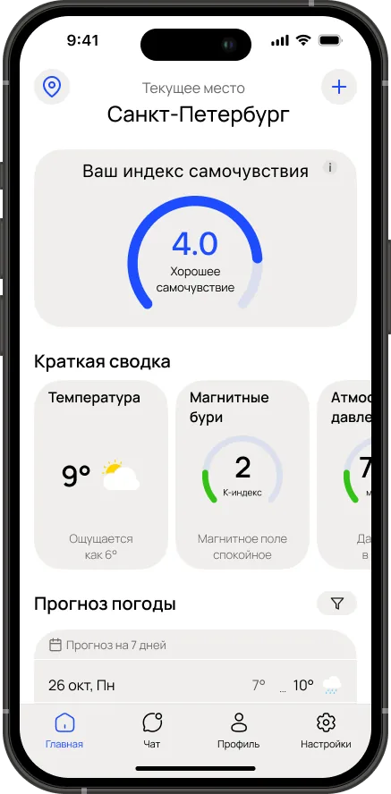
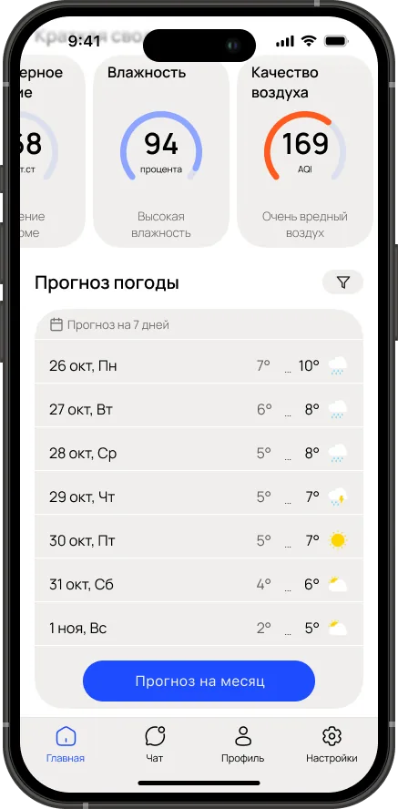
Проблема
Метеозависимому человеку непросто понять, каким будет его день. Приложения погоды дают набор цифр — давление, влажность, геомагнитный индекс — и выводы приходится делать самому.
А записать, как ты себя чувствуешь, негде. Без этого теряется ощущение контроля, и пользователь быстро бросает сервис.
Задача
Сделать спокойный и понятный интерфейс, который соединяет сложные метеоданные с личными показателями пользователя — от получения прогноза до записи в дневник самочувствия.
Этапы работы
- АудиторияОпросы, диаграммы, рынок
- КонкурентыСильные и слабые стороны
- РеференсыСпокойные health-интерфейсы
- User FlowИ User Stories для дня метеозависимого
- ВайрфреймыСогласованы с командой и куратором
- UIИндекс, сводка, чат, дневник
- ПрототипДля питча перед инвесторами
- UI-kitКомпоненты для разработки
- Защита проектаТОП-8 из 50 стартапов акселератора
User Flow
Схема описывает каждый шаг пользователя: регистрацию, короткий тест, главный экран, чат и дневник. После согласования схемы и вайрфреймов с командой и куратором перешёл к визуалу.
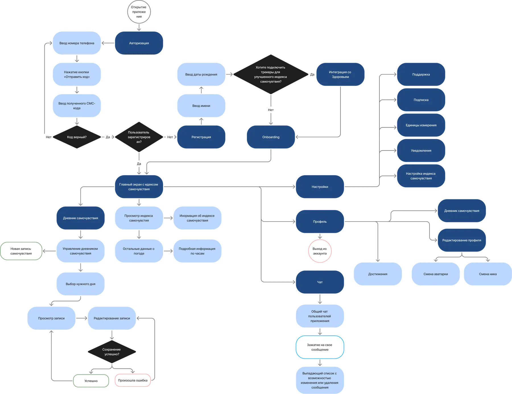
Тест после регистрации
Шесть коротких экранов: возраст и работа, здоровье, реакции на погоду, образ жизни и цели. Ответы делают индекс самочувствия персональным.
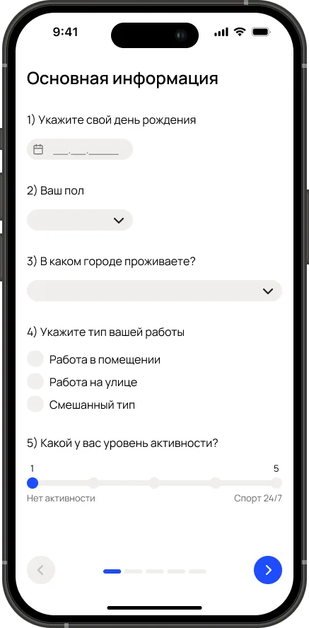
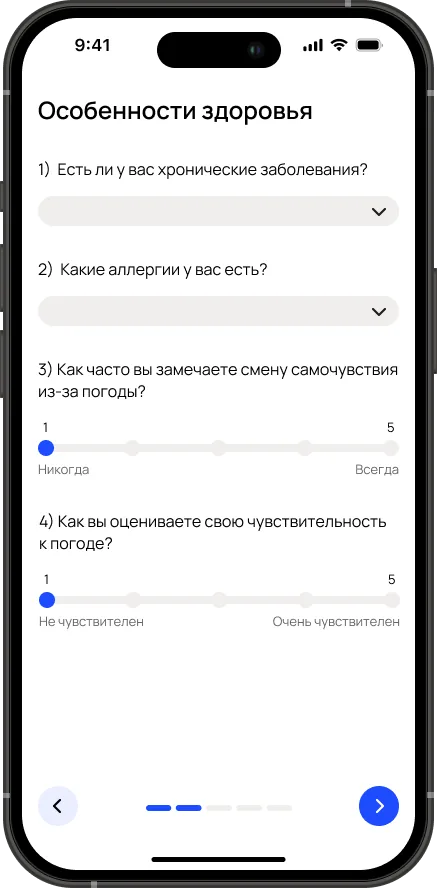
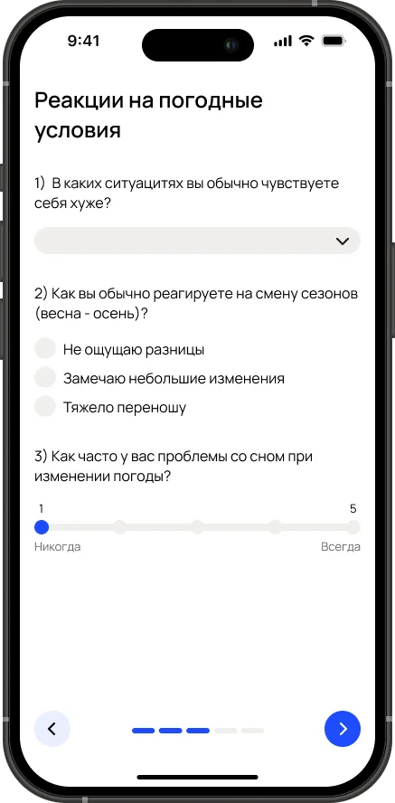
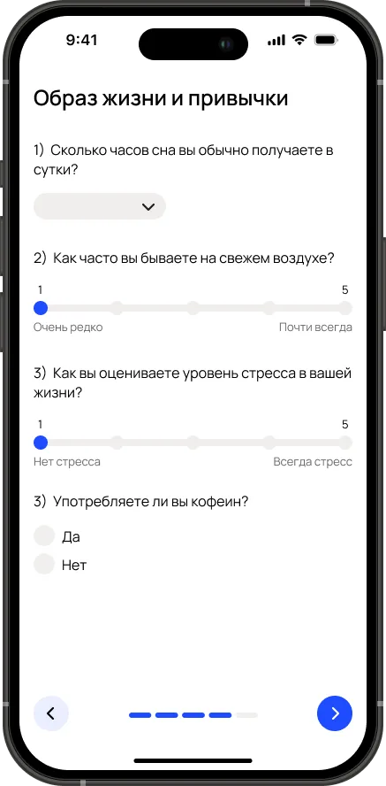
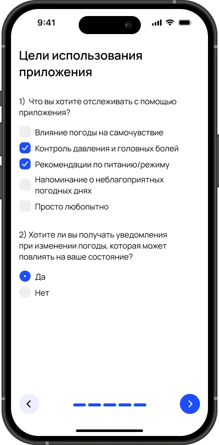
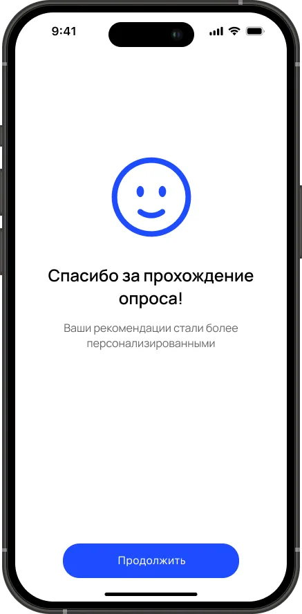
Ленту можно листать
Интерфейс
Утверждённая версия: общий чат с людьми, которые чувствуют погоду так же, дневник с цветовой отметкой каждого дня и настройка индекса под свои метеофакторы.
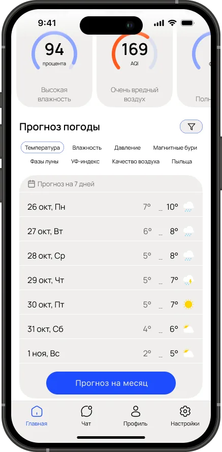
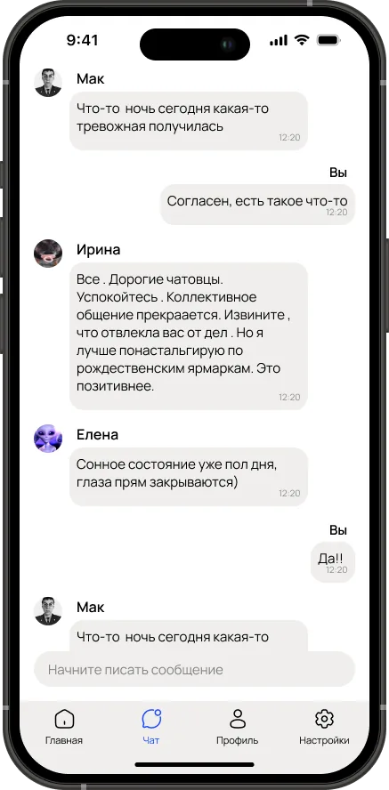
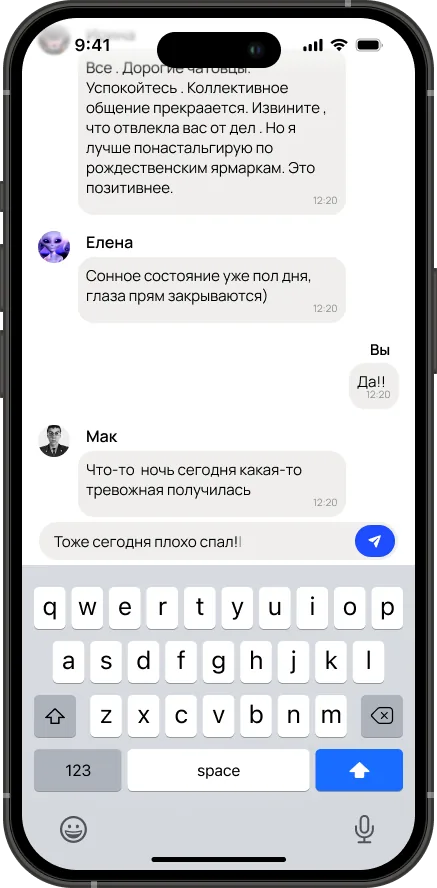
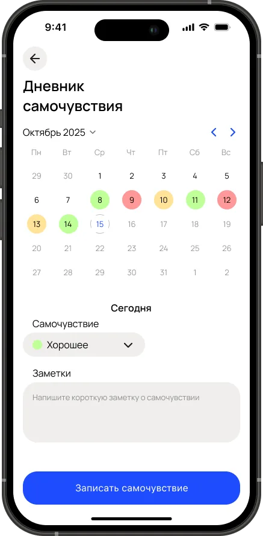
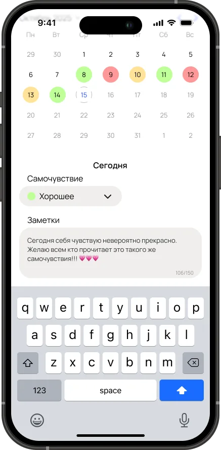
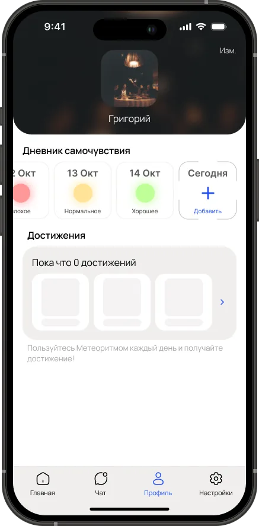
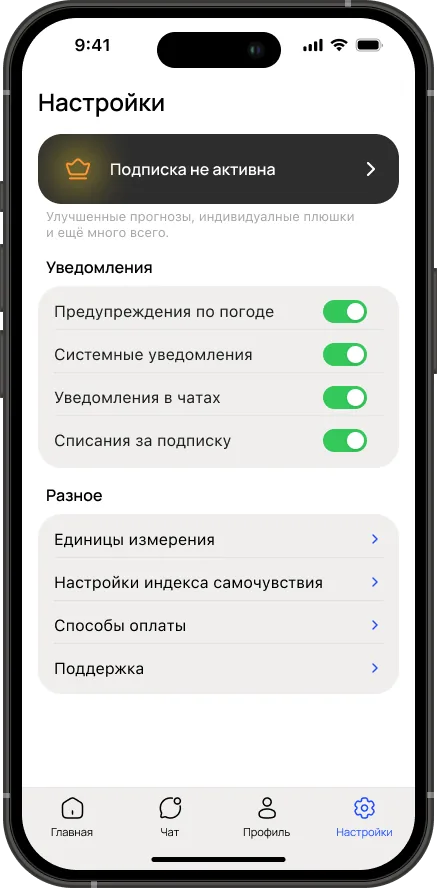
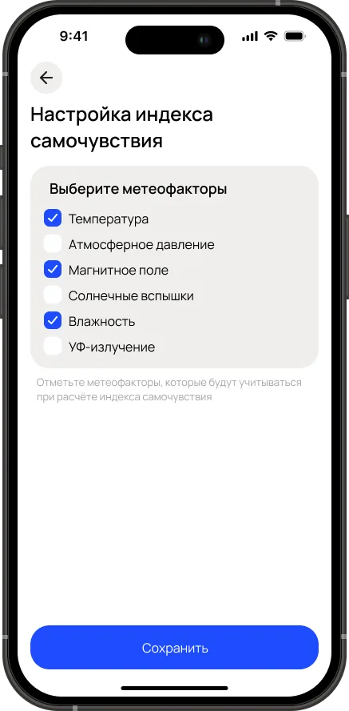
Итог акселератора
Команда ГМ-7 прошла акселерационную программу «Гидромет-Геосфера», защитила МетеоРитм и вошла в ТОП-8 из 50 стартапов. Я вёл бэклог и приоритеты, отвечал за исследование, дизайн и защиту решений перед экспертами.